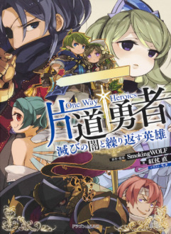

■2020-02-22 (土) 片道勇者ノベライズ裏資料動画 2▼
親が退院しましたが症状の危険度はそのままで先行きが不安なウルフです。
さて、前回に引き続きノベライズ裏資料「仲間同士の会話見本」の第2回を公開しました！
今回は「薬師ネムリ×傭兵パンティ」「薬師ネムリ×ヴィクター王」
「薬師ネムリ×黒騎士デュークガルツ」の3つ分！
【Youtube動画 片道勇者ノベライズ裏資料 第2回】
コメントも見たい人は【ニコニコ動画版】もございます。
【薬師ネムリ×傭兵パンティ】
この二人の繋がりはノベルでもそこそこ描写されていたように思います。
基本的にはネムリはまじめっ子なのでパンティの名前呼びづらいなあ、と思っていて、
パンティは特に男女や半獣人の差別もなく
フランクに接してくるイメージです（彼の名前にはセクハラ感がありますが！）。
ノベル内で、傭兵パンティが女性キャラに対してあんまり下品に
なりすぎていなかったのは今どきでありがたいなーと感じました。
性的に下品な男性キャラは微妙に味方として出しにくい感があるこのご時世！
リス君くらいの「いじられ系非人間キャラ」ならまあアリかなって気はするんですけれど。
【薬師ネムリ×ヴィクター王】
ネムリとヴィクター王は平民と王族という程度の関係で、
それ以上は特に進展しなさそうです。
ヴィクター王はネムリに対して、
いちおう「望まれる王族」的な振る舞いをするでしょうし、
ネムリは王族に対して平民らしい敬意を示すでしょう。
【薬師ネムリ×黒騎士デュークガルツ】
ネムリとデュークガルツは本当に繋がりが薄い組み合わせです。
なんせ話すための話題もなければ、デュークガルツはネムリの治療されることすらない！
という感じだったので、会話見本ではそのこと自体をネタにしています。
いちおう、資料の中ではデュークガルツはネムリが危機なら助けるよ、
とは書いていました。
（もちろんフリーダ王女の方がピンチならそっちをさらに優先するわけですが）
ということで、こんな感じで引き続き裏資料動画を公開していきます！
この資料から作られたノベライズが気になる方はこちら！
↓

片道勇者 滅びの闇と繰り返す英雄
Amazonページへ
Kindle版 ￥1,386 / 書籍版 ￥1,540
かなりしっかり会話見本を元にしてキャラ同士の雰囲気を描いてくださっているので、
ほぼほぼ期待通りのものが出てくると思っていいはずです。
それでは次回もお楽しみに！
【おまけ 力作のご感想記事が！】
ノベライズ『片道勇者 滅びの闇と繰り返す英雄』の、
ボリュームたっぷりなご感想記事をご紹介！
【ゲームリプレイ小説として、或いはそれを
越えた存在としての小説版『片道勇者』】
https://rpg-fan.jp/archives/2182 (ｱｰｶｲﾌﾞ)
ゲーム部分と絡めての感想を割とネタバレたっぷりで述べてくださっていますので、
「買うつもりはないけど気になるのでネタバレありでもいいから見てみよう」とか
「小説は読んだけど他の人はどう思ってるんだコレ！」といった方向けです！
情熱のこもったご感想記事、誠にありがとうございます！
2020-02-22 (土)  カテゴリ: 片道勇者
カテゴリ: 片道勇者
 カテゴリ: 片道勇者
カテゴリ: 片道勇者